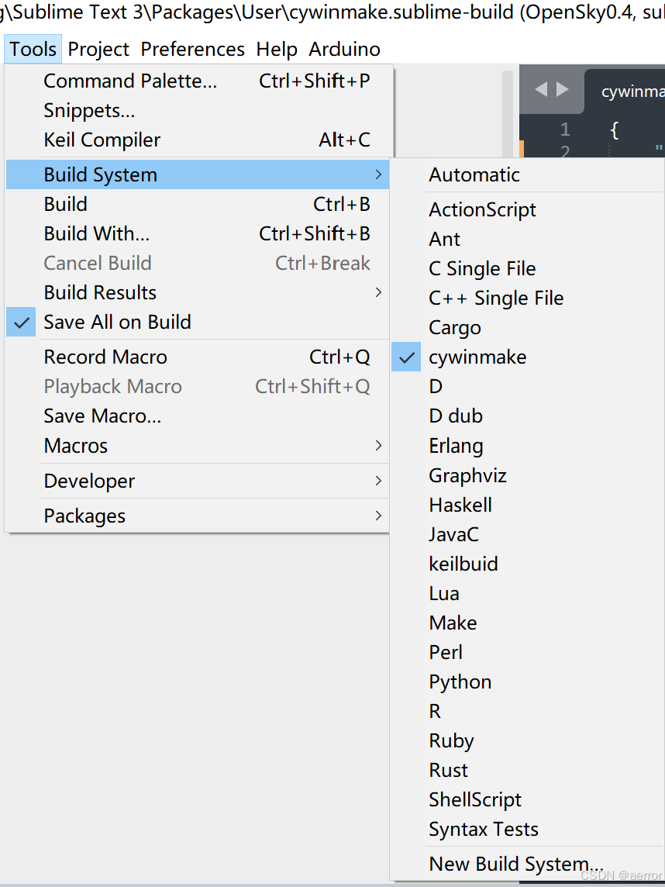

１．找到cywin的安装目录找到mintty.exe, sublime的菜单Tools新一个buildSysteｍ，

2.sublime会帮你新建个文件叫 untitle.sublime-build,填写以下内容，然后保存为cywinmake.sublime-build
{
"shell_cmd": "E:\\cywin\\bin\\mintty.exe -h always -e /bin/sh --login -i -c \"cd \"\\$OLDPWD\" && make \""
}
ｍintty.exe要点：
２.1 -e /bin/sh 一定要带--login ，否则环境变量不对。
２.2 要cd $OLDPWD，否则目录不是你当前的工作目录。
2.3 -h always 执行完不要关闭命令行窗口。
３.回到工作目录，选择这个cywinmake为buildsystem,如上图。
ctrl+B就可以编译了。